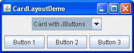
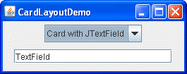

Lección: Disponer Componentes Dentro de un Contenedor
Cómo Usar CardLayout
Nota: Esta lección cubre la escritura de código de diseño a mano, lo cual puede ser desafiante. Si no está interesado en aprender todos los detalles de la gestión del diseño, preferirá usar el gestor de diseño
GroupLayout combinado con una herramienta de construcción para diseñar su IGU.
Una de tales herramientas de construcción es el
EID NetBeans. De otra manera, si quiere
codificar a mano y no quiere usar GroupLayout, entonces se recomienda GridBagLayout
como el gestor de diseño más flexible y potente.
Si está interesado en usar JavaFX para crear su IGU, vea Trabajar Con Diseños en JavaFX.
La siguiente figura representa una captura de una aplicación que usa la clase
CardLayout para
cambiar entre dos paneles.
 
Pulse el botón Lanzar para ejecutar CardLayoutDemo usando Java™ Web Start ( descargue Java SE). Alternativamente, para compilar y ejecutar el ejemplo tu mismo, consulte el índice de ejemplos.
El código completo de esta demostración está en el fichero
CardLayoutDemo.java.
La clase CardLayout gestiona dos o más componentes (usualemnte instancias JPanel) que
comparten el mismo espacio de visualización. Cuando usa la clase CardLayout, permite al usuario
elegir entre los componentes usando un cuadro combinado. La aplicación CardLayoutDemo es un
ejemplo para ilustrar esta característica.
Otra forma de lograr la misma tarea es usar un panel tabulado. La siguiente imagen muestra una versión con panel tabulado del ejemplo precedente:
Debido a que un panel con pestañas proporciona su propia GUI, usar un panel con pestañas es más simple que usar
la clase CardLayout. Por ejemplo, implementar el ejemplo precedente usando un panel con pestañas
resulta en un programa con menos líneas de código.
Pulse el botón Lanzar para ejecutar TabDemo usando Java™ Web Start ( descargue KDJ 7 o posterior). Alternativamente, para compilar y ejecutar el ejemplo usted mismo, consulte el índice de ejemplos.
El código completo de esta demostración está en el fichero
TabDemo.java.
Conceptualmente, cada componente que un CardLayout gestiona es como un naipe o
carta de intercambio en una pila, dónde sólo la carta de arriba es visible todo el tiempo. Puede elegir la
carta que está mostrando de alguna de las siguientes formas:
- Al solicitar la primera o la última tarjeta, en el orden en que se agregó al contenedor
- Al hojear la baraja hacia atrás o hacia adelante
- Al especificar una tarjeta con un nombre específico
La clase CardLayoutDemo usa el último esquema.
El siguiente trozo de código de la aplicación
CardLayoutDemo.java crea el objeto CardLayout y los componentes que gestiona.
//Donde las variables de instancia son declaradas:
JPanel cards;
final static String BUTTONPANEL = "Card with JButtons";
final static String TEXTPANEL = "Card with JTextField";
//Donde los componentes controlados por CardLayout son inicializados:
//Create the "cards".
JPanel card1 = new JPanel();
...
JPanel card2 = new JPanel();
...
//Crea el panel que contiene las "cartas".
cards = new JPanel(new CardLayout());
cards.add(card1, BUTTONPANEL);
cards.add(card2, TEXTPANEL);
Para añadir un componente a un contenedor que el objeto CardLayout gestiona, especifique una
cadena que identifque el componente que se añade. Por ejemplo, en esta demostración, el primer panel tiene la
cadena "Card with JButtons", y el segundo panel tiene la cadena
"Card with JTextField". En esta demostración estas cadenas son también usadas en el
cuadro combinado.
Para elegir qué componente muestra el objeto CardLayout, ponga el código adicional en su código de
ejemplo:
//Donde se ensambla el IGU:
//Coloca el JComboBox en un JPanel para obtener un aspecto más agradable.
JPanel comboBoxPane = new JPanel(); //usa FlowLayout
String comboBoxItems[] = { BUTTONPANEL, TEXTPANEL };
JComboBox cb = new JComboBox(comboBoxItems);
cb.setEditable(false);
cb.addItemListener(this);
comboBoxPane.add(cb);
...
pane.add(comboBoxPane, BorderLayout.PAGE_START);
pane.add(cards, BorderLayout.CENTER);
...
//El método vino de la implementación de la clase ItemListener,
//contiene funcionalidad para procesar el elemento seleccionado en el cuadro combinado
public void itemStateChanged(ItemEvent evt) {
CardLayout cl = (CardLayout)(cards.getLayout());
cl.show(cards, (String)evt.getItem());
}
Este ejemplo muestra que para usar el método show de la clase CardLayout, debe
establecer el componente visible actualmente. El primer argumento en el método show es el
contenedor que CardLayout controla ─ esto es, el contenedor de los componentes
que CardLayout gestiona. El segundo argumento es la cadena que identfica el componente a mostrar.
Esta cadena es la misma cadena que fue usada cuando se añadía el componente al contenedor.
La IPA de CardLayout
La tabla siguiente lista los métodos de la clase CardLayout que son usados para elegir un
componente. Para cada método, el primer argumento es el contenedor par el cual CardLayout es el
gestor de diseño (el contenedor de las cartas que CardLayout controla).
| Método | Propósito |
|---|---|
first (Container parent)
|
Se dirige a la primera carta del contenedor. |
next (Container parent)
|
Se dirige a la siguiente carta del contenedor. Si la carta visible actualmente es la última, este método se dirige a la primera carta en el diseño. |
previous (Container parent)
|
Se dirige a la carta previa del contenedor. Si la carta visible actual es la primera, este método se dirige a la última carta en el diseño. |
last (Container parent)
|
Se dirige a la última carta del contenedor. |
show (Container parent, String name)
|
Se dirige al componente que fue añadido a este diseño con el nombre especificado, usando
el método
addLayoutComponent.
|
Ejemplos que Usan CardLayout
Sólo un ejemplo en este recorrido usa CardLayout, y este es
CardLayoutDemo. En general, nuestros
ejemplos usan paneles tabulados
en vez de CardLayout, ya que un panel tabulado o con pestañas suministra su propio IGU.